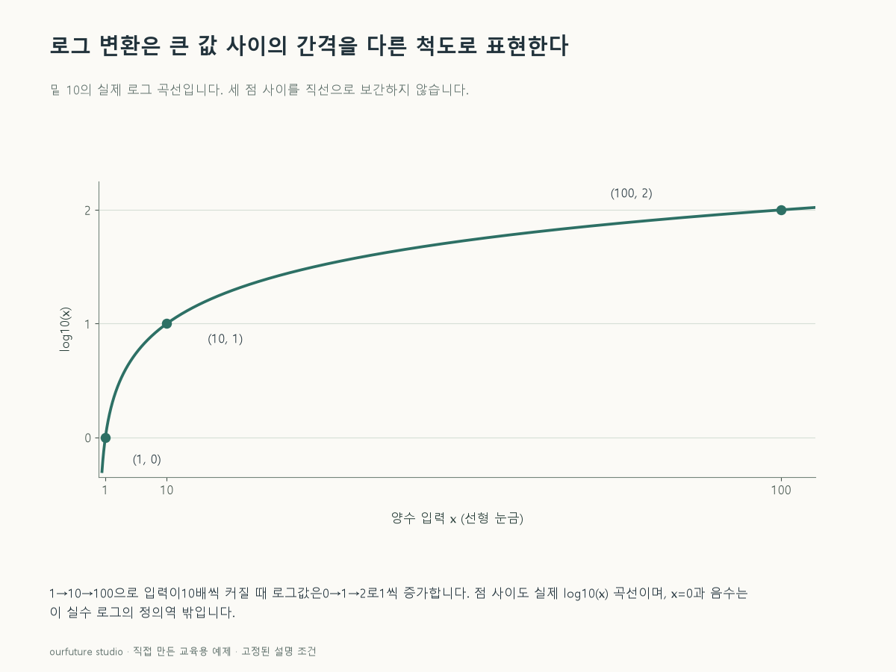

조건을 바꾸며 확인하기
반올림은 표시용이다. log1p·상수 보정·복소로그·모형 학습을 자동으로 적용하지 않는다.
설명 그림과 비교하기
아래 그림과 표는 고정된 설명 예제입니다. 기본·변형 중 어떤 조건인지 캡션을 읽고, 바꾼 입력의 결과는 계산 칸에서 확인하세요.

같은 문제를 직접 골라 보기
실수 범위에서 밑이 10인 로그를 쓴다. 입력 x=100이다.
조건을 더 바꾸면?
입력을 0으로 바꾸고 다른 보정 없이 log10(x)를 계산할 수 있을까?
변형 풀이 확인
유한한 실수 값으로 계산할 수 없다.
log10(x)의 실수 정의역은 x>0이다. log10(1+x)로 바꾸는 것은 다른 변환이며 별도로 명시해야 한다.
로그의 같은 간격은 원자료의 같은 배율이다.